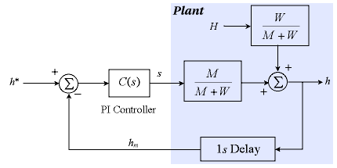

You are here : Control System Design - Index | Simulations | Rolling Mill | Part 1
Rolling Mill Tutorial - Part 1
Before continuing, make sure you have read Chapter 5.
System Model
The exit thickness h is obviously related to the gap between the rolls, which is, in turn, related to the unloaded position of the backup rolls s (also called the unloaded screw position) and the input thickness H. More specifically, the force on the rolls is given by
F = M ( h - s )
Another equation for force is
F = W ( H - h )
Combining these two gives
h ( M + W ) = M s + W H

Usually, we find that
 and
and 
The problem is that the exit thickness h cannot be measured immediately after it leaves the roll gap, but is measured further down the line, introducing a measurement delay into the system. This delay obviously depends on the speed of the steel exiting the mill, but we will assume that it is constant at one second. (We know intuitively that a measurement delay is undesirable, since the control system is working with information which is not current.)
This leads us to the following model for the closed loop system:

The controller is

Java Applet Simulation
The JAVA applet below is a simulation of the above system. The control parameters have been chosen as kp = 0.25 and ki = 2.5 to provide a reasonable response. The graph has a vertical scale of 0.1mm per division and a horizontal scale of 2 seconds per division. It shows the set-point (the blue trace), the actual exit thickness h (the green trace) and the measured (delayed) exit thickness hm (the red trace).
There is also a 10 ms time constant associated with changing the screw position s which is not shown in the above diagram, but is included in the simulation.
Pressing the "Change Parameters" button allows you to change the set point, the input thickness H, the controller parameters kp and ki and the amount of measurement noise in the system. It is not possible to have a set point larger than the input thickness, neither of which may be negative. When you change the input thickness, the animation shows the "disturbance" approaching, and it only takes effect when it reaches the rolls. Try experimenting with these parameters.
| Things to try | Things to notice |
| Change the input thickness to 0.5 | Watch the disturbance response and the effect of the time delay |
| Change the set point to 0.3 | Watch the set-point response and the effect of the time delay |
| Increase the controller gain to try and increase the system's response speed | The system goes unstable even for relatively low loop gains. |
You will notice that it is not possible to produce a good stable response due to the presence of the time delay. If you are wondering about the sinusoidal component in the output, then have patience - we'll come to that shortly.
Next, we try some more advanced control ideas on this system to try and work around this time delay.